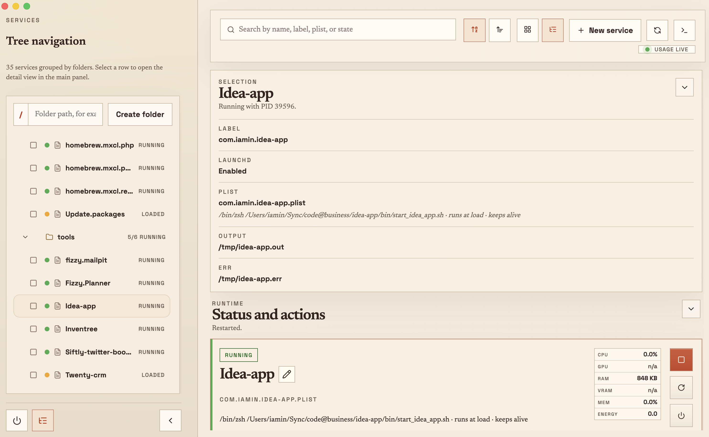
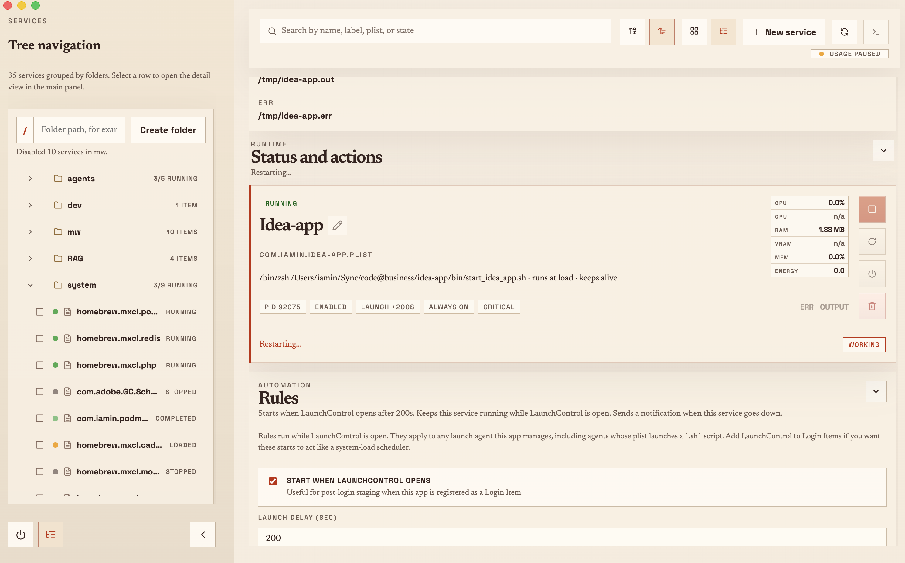
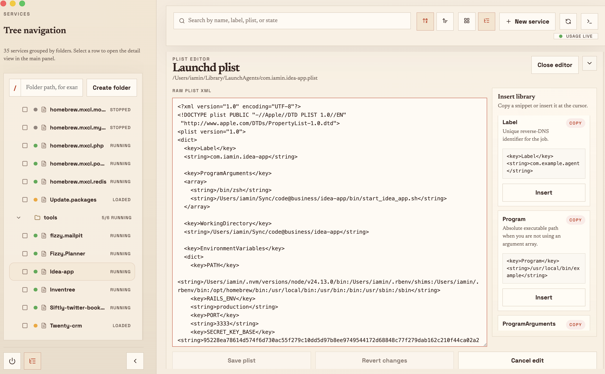
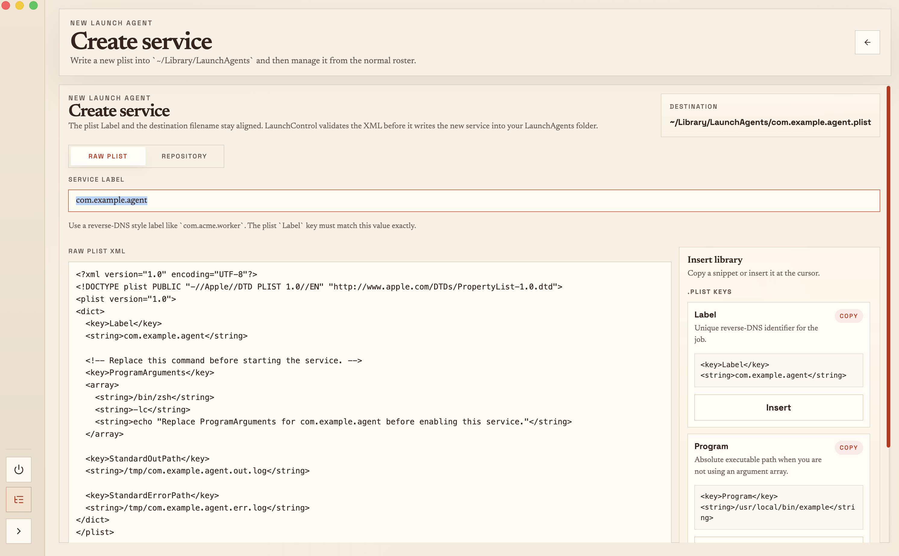

LaunchControl gives macOS's most capable background task system
the interface it never had. See every service on your machine,
control it with a click, and stop writing launchctl commands by hand.

Start, stop, schedule, restart on crash — launchd can do all of it.
But the only interface Apple ships is launchctl:
cryptic terminal commands and hand-edited XML plists.
LaunchControl fixes that completely.
One window for every background service on your Mac — from Homebrew daemons to your own automation scripts — with all the controls you actually need.
All LaunchAgents and Daemons in a navigable folder tree with live RUNNING · STOPPED · LOADED badges per service.
CPU, GPU, RAM, VRAM, memory, and energy impact — reported per service in real time. Spot runaway processes instantly.
Keep services alive, start them on app open, and get macOS notifications when a critical service unexpectedly stops.
Full XML editing with syntax highlighting and a snippet library. Insert Label, ProgramArguments, KeepAlive with one click.
Filter by name, label, plist path, or running state across all folders. Find anything instantly.
Write new plists from scratch or let LaunchControl scan your repo and generate a configuration automatically.
Stream stdout and stderr from any service in real time. Jump to output files without hunting for paths.
Mark a service as critical and receive a native macOS notification the moment it goes down after being observed running.
Navigate all your background services in a tree grouped by folder. Live status badges update as services start, stop, or crash. Click any service to open its full detail panel — no guessing what's running on your machine.
Start, stop, restart — all from one window. No plist paths, no terminal, no manual.
Describe what should happen and LaunchControl handles it. No cron jobs, no shell scripts, no babysitting your services after a reboot or a crash.

Full XML editing with syntax highlighting — plus a library of ready-to-insert snippets on the side. No more memorizing launchd XML keys or hunting through Apple documentation.

Write a new launch agent from scratch with a validated plist form, or use the Repository tab to let LaunchControl detect your project type, find your run command, and generate the plist automatically.

LaunchControl is a native macOS app for every developer, sysadmin, or power user who runs background services and deserves better than a terminal and a stack of XML files.
Free · macOS 13 Ventura or later · Native app · Open source